🔐 Your stay details
We will message your lockbox number, code and Wi-Fi through your booking on arrival day.
📍 Key pick-up: lockbox at the tree by the parking meter outside 11 Irving Street, Phillip
Keys are ready from 3:00pm on arrival day, unless we've confirmed an early check-in.
🔑 Key Collection Details
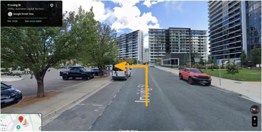
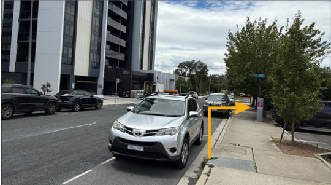
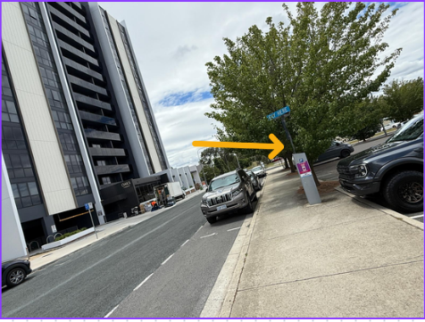
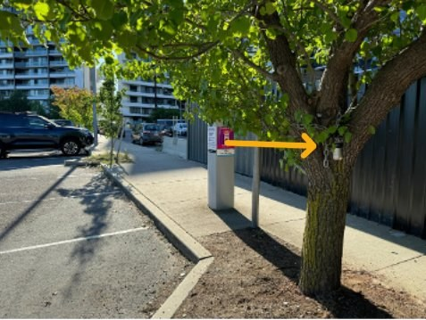
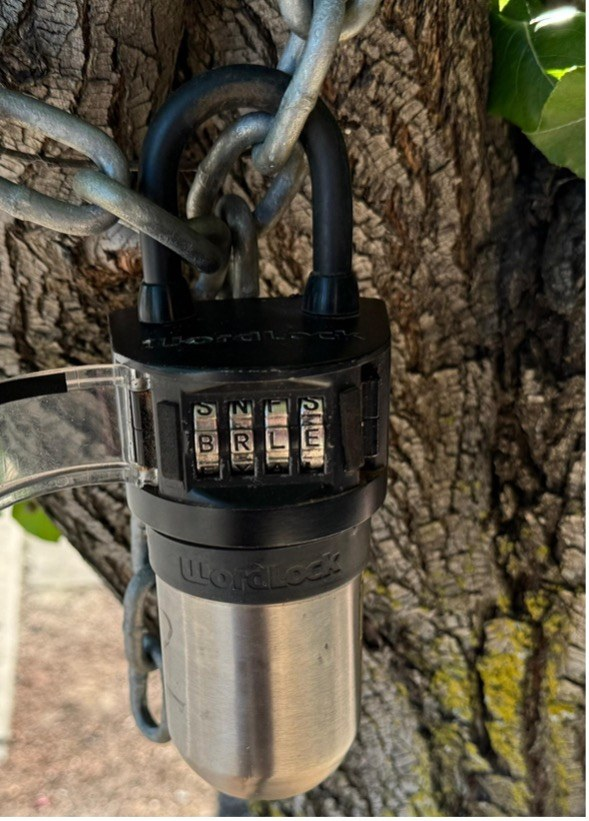
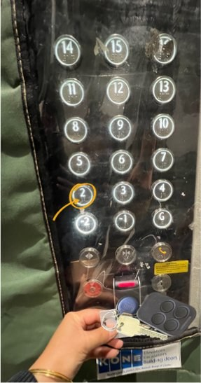
Heads up: the ground-level walk-in entrance is at the REAR of the building.
It is NOT next to the car park entry at 9 Irving Street. If you're driving, park in the basement first, then take the lift up to Level 2.
🚗 Driving to your car space
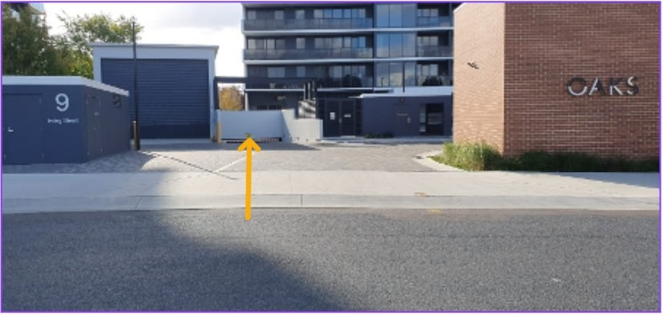
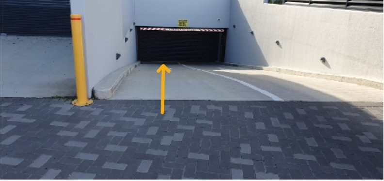
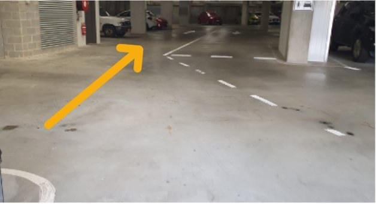
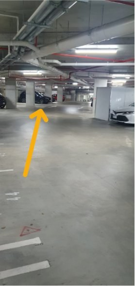
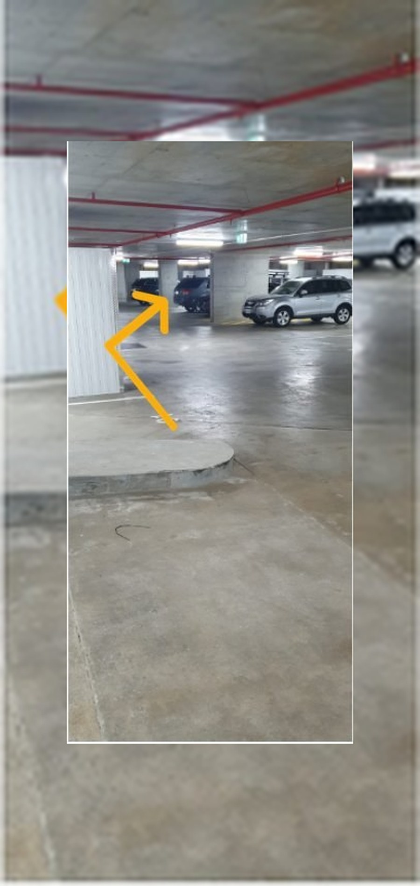
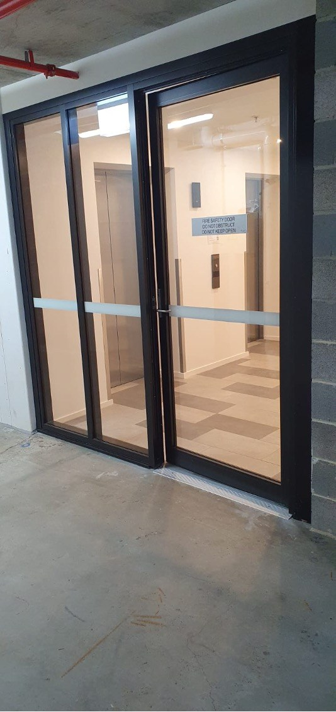
You get 3 keys: the black remote opens the garage, the fob runs the lifts and building doors, and the door key opens Unit 8. Keep all 3 together.
Most doors lock automatically. Always take your keys with you. Lockout and lost key fees apply.
About the property
A stylish, modern 2 bedroom, 2 bathroom apartment in the Oaks Crown building in Phillip. It's next to the Phillip Swimming and Ice Skating Centre, with Westfield Woden and Canberra Hospital close by. The building has a pool, gym and BBQ area.
Property Guide
🍳 Cooktop & Oven
Turn on the wall switch near the kitchen first. It powers both the cooktop and the oven.
🛏 Bedding & Linen
Fresh linen is supplied for the number of guests booked. There's a spare sheet set folded in the cupboard.
Using the sofa bed? Its linen and bedding are in the main bedroom wardrobe.
Need extra linen? Just let us know. Additional charges may apply.
📺 Television
The Smart TV is connected to the internet. Feel free to log in to your streaming apps, just remember to log out before you leave.
🔔 Intercom
Ask them to dial 11 on the intercom.
Answer the call inside the apartment.
Press Talk, then the key/bell button. This lets them into the lifts.
🔑 Lost keys & lockouts
Lost keys: $275 replacement fee (inc GST)
Lockout (keys left inside): $165 call-out fee (inc GST)
🧴 Supplies
We provide a starter supply of essentials. Top-ups can be arranged and may incur an extra charge.
Building amenities
To the left of the lifts.
Level 1.
Ground floor.
Level 1.
Property FAQs
Is the apartment cleaned during my stay?
Daily housekeeping isn't included. You can book a mid-stay clean right here in your portal.
Is linen included?
Yes. Linen is supplied for the number of guests on your booking.
What supplies are included?
A starter pack of kitchen, bathroom and cleaning supplies. Top-ups come with a mid-stay clean, or you're welcome to buy your own.
Can I get a tax invoice?
Yes. Email bookings@citistayz.com and we'll send one.
Can I smoke?
No. The apartment and balcony are strictly non-smoking. A cleaning fee applies.
Quiet hours?
10:00pm to 8:00am. No parties or events.
Safety Protocols
🚨 In Case of an Emergency
If there is an emergency, please dial 000 immediately. Once it is safe to do so, notify our team so we can assist if needed.
Please follow all evacuation instructions provided via the building's speaker system.
🔔 Smoke Alarm
For your safety, the apartment is fitted with smoke alarms. Please do not cover or tamper with the smoke alarm under any circumstances.
When cooking:
Avoid opening the hallway door, as this may trigger the building's smoke alarm system and result in fines for false alarms.
If additional ventilation is needed, please open the balcony door instead.
🏃 Evacuation Procedure
In the event of an evacuation: Follow the instructions announced over the hallway speakers.
Refer to the emergency evacuation map located near the elevators, which shows all exits and the designated assembly area.
🚪 Fire Stairs
Fire stairs are located on every level of the building. Your apartment key can also be used to access fire doors if required.